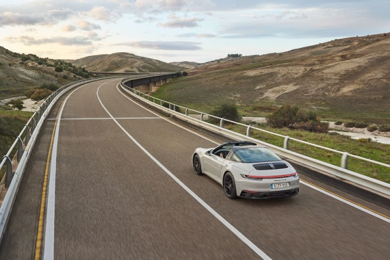
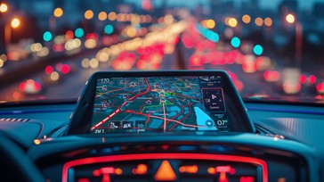

AUTOWORLD|THE PASSION FOR DRIVING
- INTRODUCTION:THE DRIVONG FORCE
- THE GATEWAY TO PERSONAL FREEDOM AND Mobility
- ECONOMIC ENGINE OF THE World
- Social And Professional Connectivity
- The Evolution:Sustainability And The Future
- Conclusion
The Driving Force: How Cars Shape Our Modern World Since the first "horseless carriage" chugged into existence, the automobile has done more than just move us from point A to point B. It has fundamentally reshaped our geography, our economy, and our personal freedom. In today’s fast-paced world, the car is often seen not just as a luxury, but as an indispensable extension of the human experience. 1. The Gateway to Personal Freedom and Mobility Perhaps the most significant impact of the car is the unparalleled freedom it provides. Unlike public transportation, which operates on fixed schedules and routes, a car offers the liberty to travel whenever and wherever you choose. Spontaneity: You can decide to take a road trip at 2:00 AM without checking a timetable. Accessibility: Cars reach remote areas where buses and trains simply do not go, opening up the countryside for exploration and living.
2. Economic Engine of the World The automotive industry is a titan of the global economy. Its importance stretches far beyond the showroom floor. Job Creation: Millions of people are employed in manufacturing, sales, repairs, and infrastructure development. Logistics and Trade: While we focus on personal cars, the technology fuels the vans and trucks that deliver our food and packages, keeping the pulse of global commerce steady. 
3. Social and Professional Connectivity In our modern landscape, where work and home are often miles apart, the car acts as the bridge. Career Opportunities: Owning a car expands your "job search radius," allowing you to take better positions that might be outside your local neighborhood. Family Bonds: It makes visiting distant relatives or taking the kids to extracurricular activities manageable, ensuring that physical distance doesn't mean emotional distance. 4. Safety and Convenience in Daily Life Modern vehicles are marvels of engineering designed to make life easier and safer. Emergency Situations: In medical or family emergencies, a car is often the fastest way to get help or reach a hospital. Comfort and Privacy: A car serves as a personal sanctuary—a place where you can listen to your favorite music, make private calls, or simply enjoy a moment of quiet during a busy day. 5. The Evolution: Sustainability and the Future The importance of cars is currently undergoing a massive shift. We are moving from the era of internal combustion to the era of Electric Vehicles (EVs) and Autonomous Driving. "The car of the future isn't just a vehicle; it's a mobile living space that prioritizes the planet as much as the passenger." As we transition to greener energy, the car remains vital, but its impact on the environment is being mitigated by new technology, ensuring it remains a sustainable choice for generations to come. 
Conclusion The car is much more than a collection of metal, rubber, and glass. it is a symbol of independence, a driver of economic growth, and a tool for human connection. While we face challenges regarding traffic and the environment, the fundamental importance of the automobile in providing us with the life we lead today is undeniable . It isn't just about the journey or the destination; it's about the freedom to choose both.
page 3
page 1